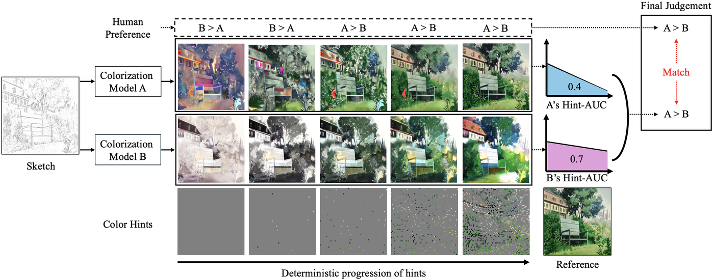
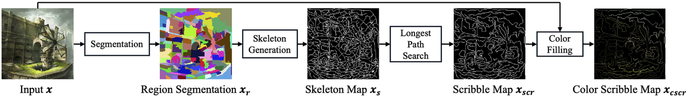
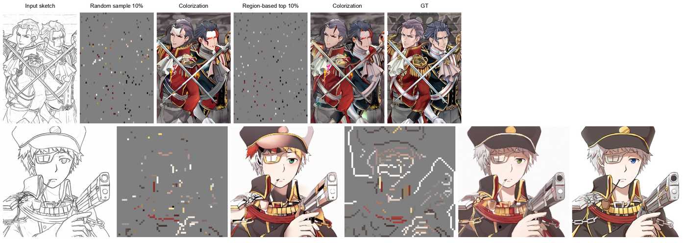

Hint-AUC: Deterministic Region-based Hint Generation for Line Art Colorization Evaluation
IEEE Transactions on Visualization and Computer Graphics (TVCG), 2026 · doi:10.1109/TVCG.2026.3738401
- Paper (DOI)
- PDF (author version)
- Supplement (PDF)
- Video (YouTube)
- Code & models (GitHub)
- Archive (Zenodo DOI)
- Library: pip install hintauc
- Documentation

Abstract
Line art colorization is an important design application that has been extensively studied in recent years. Focusing on usability, most approaches have been developed for interactive use where colors are specified using user hints. However, collecting a large dataset of user hints for training is challenging. As a result, a variety of approaches have emerged for generating hints for both training and evaluation, such as color dots and scribbles. Furthermore, the lack of a common evaluation framework, differences in hint generation implementations, and limited code availability reduce reproducibility. For these reasons, highly stochastic neural network-based algorithms have made it challenging to fairly evaluate and compare different approaches. In this paper, we introduce a novel evaluation framework for line art colorization algorithms that leverages deterministic region-based hints inspired by human drawing behavior. Our framework enables in-depth, fair comparisons with existing colorization models. Moreover, the same generated hints can be incorporated into training a colorization model to significantly improve the quality of the colorization results, as shown in evaluations using both deterministically and randomly sampled hints. Our evaluation is consistent with the overall human-preference results, and training with the generated hints improves colorization quality.
What the paper provides
- DHT — deterministic hints. An illustration is segmented into regions; each region gets one scribble (the longest path of its skeleton) and one dot, coloured with the region mean. Given a region map, the hints are a fixed function of the image, not random samples: the stored hint maps of the paper are the reference for every reported number, regeneration with the paper's FilFinder path can move a few pixels between runs, and the library's
geodesicpath is bit-reproducible. Hints are added largest region first as the hint ratio grows. - Hint-AUC. A model is run at 0, 1, 3, 5, 10, 25, 50 and 100 % of the regions; the metric curve over the ratio is integrated into one score. Seven metrics (MSE, PSNR, SSIM, LPIPS, OpenCLIP, DINO, DreamSim) and a user study agree on the ranking.
- DetFill. A pixel-space diffusion colorization model trained with the deterministic hints; training with them improves colorization quality under both deterministic and random hints.

Main result
Hint-AUC on the 3,000 Danbooru2021 test illustrations (mean over three line-art extractors; higher is better except MSE, LPIPS and DreamSim). DetFill, trained with the deterministic hints, is best on every metric for both hint types.
| Hints | Model | MSE ↓ | PSNR ↑ | SSIM ↑ | LPIPS ↓ | OpenCLIP ↑ | DINO ↑ | DreamSim ↓ |
|---|---|---|---|---|---|---|---|---|
| Dot | PaintsTorch | 0.079 | 11.012 | 0.480 | 0.484 | 0.820 | 0.849 | 0.464 |
| Diffusart | 0.093 | 10.398 | 0.470 | 0.396 | 0.877 | 0.866 | 0.323 | |
| ColorizeDiffusion v1 (200 ep) | 0.054 | 13.623 | 0.537 | 0.375 | 0.873 | 0.902 | 0.350 | |
| ColorizeDiffusion v2 (200 ep) | 0.059 | 13.825 | — | — | 0.898 | 0.909 | 0.253 | |
| DetFill (ours) | 0.021 | 17.321 | 0.675 | 0.209 | 0.938 | 0.935 | 0.134 | |
| Scribble | PaintsTorch | 0.075 | 10.957 | 0.504 | 0.434 | 0.866 | 0.887 | 0.363 |
| Diffusart | 0.045 | 13.069 | 0.596 | 0.313 | 0.903 | 0.911 | 0.256 | |
| ColorizeDiffusion v1 (200 ep) | 0.053 | 13.698 | 0.510 | — | 0.871 | 0.899 | 0.346 | |
| ColorizeDiffusion v2 (200 ep) | 0.041 | 14.925 | — | — | 0.917 | 0.928 | 0.208 | |
| DetFill (ours) | 0.015 | 19.723 | 0.724 | 0.183 | 0.954 | 0.951 | 0.084 |
Values from Table II of the paper (ColorizeDiffusion v1/v2 fine-tuned for 200 epochs on the same data; cells marked — are not reported in the main table).

Evaluate your own colorization model
The hintauc library generates the hints, scores the outputs and integrates the curve. Two ways to use it: hand in one directory of your model's outputs per hint ratio, or plug in a Python function.
pip install "hintauc[perceptual]" hintauc curve pred_root/ ground_truth/ --metrics mse psnr ssim lpips dreamsim --json result.json --plot curve.png
import hintauc
result = hintauc.evaluate_colorizer(my_model, [("line_art/0001.png", "ground_truth/0001.png"), ...])
print(result["hint_auc"]) # per-metric Hint-AUC, plus a record of the protocol and library versions
grsi-1.0) is archived at Zenodo, doi:10.5281/zenodo.22995102. One command reproduces Fig. 9 from a fresh checkout:git clone https://github.com/MADONOKOUKI/DetFill-with-DHT.git cd DetFill-with-DHT && bash replicability/run.sh # Fig. 9: about 3–5 min on a GPU, 20–30 min on CPU
Video
Supplementary video (6 min 26 s): watch on YouTube.
Citation
@ARTICLE{madono2026hintauc,
author={Madono, Koki and Mingcheng, Yuan and Simo-Serra, Edgar},
journal={IEEE Transactions on Visualization and Computer Graphics},
title={{Hint-AUC: Deterministic Region-based Hint Generation for Line Art Colorization Evaluation}},
year={2026},
doi={10.1109/TVCG.2026.3738401}
}
← Back to the publication list